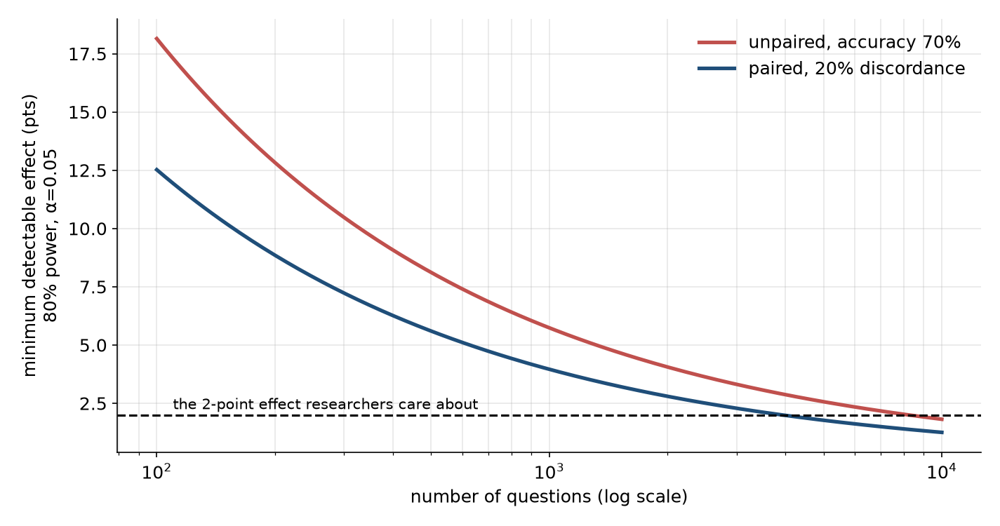

Eval study notes · Coding practice set
The last two chapters were about reading a result after the fact. This one is about designing the measurement before you run it, which is where an evaluation platform engineer has the most leverage. Every benchmark the platform runs costs GPU hours on every checkpoint. If a benchmark is too small to detect the effects researchers care about, those GPU hours buy noise; if it is far bigger than needed, they buy precision nobody uses. Power analysis is how you tell the difference.
A training team tells you that the improvements they are hunting for, from one data-mixture ablation to the next, are around two percentage points. They want to know whether the 500-question benchmark is good enough to see them, and if not, how large it needs to be. Take a moment to think about how you would answer before reading on.
Any test can go wrong in two directions. It can declare a difference when there is none, a false positive; the significance level α, conventionally 0.05, caps how often that happens. Or it can miss a difference that really exists, a false negative. The probability of catching a real effect of a given size is called the power of the test, and the convention is to want at least 80 percent.
The minimum detectable effect, or MDE, is the smallest true difference that your test catches with 80 percent power at α = 0.05. For a normal-approximation test the formula is MDE ≈ (1.96 + 0.84) × SE, where 1.96 comes from α and 0.84 from the 80 percent power requirement, and SE is the standard error of the difference you are testing. That constant, 2.8, is worth remembering: the smallest effect you can reliably detect is about 2.8 standard errors.
If you compute the standard error as if the two models were evaluated on independent question sets, at an accuracy of about 70 percent, you get these minimum detectable effects: 12.8 points with 200 questions, 8.1 with 500, 5.7 with 1,000, 4.1 with 2,000 and 2.6 with 5,000. Taken at face value, the 500-question benchmark can only reliably detect an 8-point improvement, and you would need about 8,000 questions to see a 2-point one. That is an alarming answer and it would justify a big benchmark-building project.
But you know from Chapter 8 that the comparison is paired, so the relevant standard error depends on the discordance rate, the fraction of questions on which the two models disagree. For two checkpoints from the same training run, discordance is typically modest, because consecutive checkpoints get the same easy questions right and the same hard ones wrong. Suppose 20 percent of questions are discordant. Then the paired standard error is roughly √(0.20 / n), and the minimum detectable effect becomes 8.9 points at 200 questions, 5.6 at 500, 4.0 at 1,000, 2.8 at 2,000 and 1.8 at 5,000.

So to see a 2-point improvement with 80 percent power you need around 4,000 items for checkpoints that disagree on a fifth of questions, and fewer if they agree more. The 500-question benchmark is still too small for the job, but the gap is half what the naive analysis suggested. The honest answer to the researcher has three parts. A single 500-question benchmark cannot reliably detect a 2-point change between two checkpoints. Pooling several related benchmarks into one paired comparison, or resampling each question several times if the model is stochastic, can close much of the gap without writing new questions. And the right number depends on the measured discordance rate, which the platform can compute from past runs and should display.
A version of this problem shows up continuously during pretraining. The platform evaluates every few thousand steps, and researchers stare at curves. A benchmark with high sampling noise produces a jagged curve whose wiggles are larger than the real trend over short horizons, and people read stories into the wiggles. The AI2 OLMo team’s 2025 work on “signal and noise” in benchmarks formalised this as a ratio: the spread between genuinely different models (signal) divided by the checkpoint-to-checkpoint jitter of a single model late in training (noise). Benchmarks with a low signal-to-noise ratio are bad at ranking small-scale experiments, and they found that simple changes, such as averaging over the last few checkpoints or switching from accuracy to a continuous metric like the per-token log-likelihood of the correct answer (bits-per-byte), raise the ratio a lot. Their headline example: switching the MBPP coding benchmark from accuracy to bits-per-byte on the correct solution raised its signal-to-noise ratio from 2.0 to 41.8 and the fraction of small-scale decisions that matched the large-scale outcome from 68 to 93 percent. A related AI2 study, DataDecide (April 2025), found that simply ranking data recipes at 150 million parameters picked the winner at 1 billion about 80 percent of the time. The MAI-Thinking-1 technical report reportedly found the opposite risk too, data-mixture rankings that flip between small and large scale, which is the caution that keeps this from being a solved problem.
This is a theme that runs through how labs evaluate during pretraining. Early in training, accuracy on a multiple-choice benchmark sits at chance and is pure noise, while the probability the model assigns to the correct answer is already moving smoothly. So training-time eval suites usually track continuous likelihood-based metrics early and switch to generative accuracy later. A platform that only knows how to compute accuracy cannot support that, which is one of the reasons the open frameworks distinguish “loglikelihood” requests from “generate until” requests (Chapter 3 returns to this).
Code and maths benchmarks often report pass@k: the probability that at least one of k sampled attempts at a problem is correct. It sounds trivial to compute, and the trivial way is wrong in a way interviewers like to probe.
The tempting approach is to sample exactly k attempts per problem and record whether any passed. That estimator is unbiased but very noisy. The other tempting approach is to measure the single-attempt pass rate p and report 1 − (1 − p)^k, which is wrong because it assumes every problem has the same difficulty; it averages p across problems before applying a nonlinear function, and averaging and nonlinearity do not commute.
The estimator introduced with OpenAI’s Codex paper (Chen et al., 2021) does it properly. For each problem, generate n samples with n larger than k (say n = 20), count the c that pass, and compute the probability that a random subset of k of those n samples contains at least one pass: 1 − C(n − c, k) / C(n, k), where C is the binomial coefficient. Average that over problems. With n = 20 samples and c = 3 correct on a problem, pass@1 is 0.15 and pass@5 is 0.60. The naive formula 1 − 0.85⁵ gives 0.56 for that single problem, and across a benchmark with varied difficulty the error is larger. In code, compute the ratio of binomial coefficients as a running product rather than with factorials, because C(200, 100) overflows anything you would want to use.
There is also a newer subtlety. For reasoning models, labs increasingly report “avg@k” or “mean@k” (the mean single-attempt accuracy over k samples, which is just a lower-variance estimate of pass@1), “maj@k” or “cons@k” (accuracy of the majority-vote answer across k samples), and pass@k in its original sense. These measure different things: maj@k credits a model for being consistently right, pass@k credits it for being occasionally right. When a researcher asks for “the AIME number”, ask which one.
The smallest effect you can reliably detect is about 2.8 standard errors of the difference. Pairing roughly halves the number of questions needed, and the discordance rate between the two models sets exactly how much; at 20 percent discordance, seeing a 2-point change with 80 percent power takes about 4,000 items. Small, noisy benchmarks mislead checkpoint-by-checkpoint training decisions, and continuous metrics such as log-likelihood of the correct answer carry more signal early in training than accuracy. Compute pass@k with the unbiased estimator from n samples per problem, never as 1 − (1 − p)^k, and ask which of pass@k, avg@k and maj@k anyone means before comparing numbers.